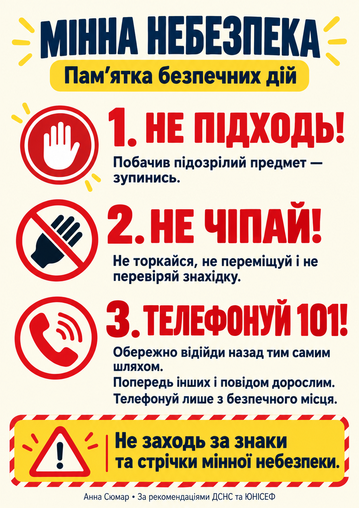

БЕЗПЕЧНІ РІШЕННЯ · 10–15 ХВИЛИН
Мінна небезпека
Навчальна гра допоможе потренувати дії у небезпечних ситуаціях. Тут немає таймера, змагання чи завдань із пошуку предметів.
Можна зробити перерву або пройти гру разом із дорослими. Твоя безпека важливіша за будь-який результат.
НЕ ПІДХОДЬ!НЕ ЧІПАЙ!ТЕЛЕФОНУЙ 101!Обери безпечне рішення
У кожній ситуації обери один варіант, прочитай пояснення й переходь далі. Якщо помилишся — спокійно переглянь пояснення.
Постер-пам’ятка

Прочитати пам’ятку текстом
- Побачив підозрілий предмет — зупинись. Не наближайся й не торкайся його.
- Не переміщуй, не відкривай, не перевіряй та не накривай знахідку.
- Обережно відійди назад тим самим шляхом, уважно дивлячись під ноги. Не обирай новий маршрут через неперевірену місцевість.
- Попередь інших, щоб не наближалися, і повідом дорослим.
- Телефонуй 101 лише з безпечного місця. Назви місце знахідки та виконуй вказівки диспетчера. Не повертайся ближче, щоб уточнити вигляд предмета.
- Не заходь за знаки та стрічки мінної небезпеки, навіть якщо не бачиш небезпечних предметів.